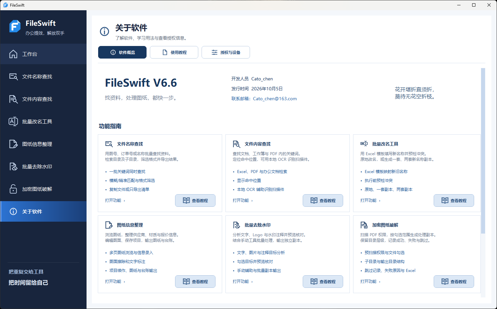

01
图纸信息整理
浏览、标注并整理供应商、材质与报价；按表给整批图纸插入不同文字，保存项目续做。
批量文本 · 信息台账 · 项目续做为工程图纸与日常资料而生
把反复查找、逐个改名和图纸整理，
交给一个顺手的 Windows 桌面工具。
Windows 桌面应用 · 文件在本机处理

为这些日常工作，少一点重复。
01 / 核心能力
从找到文件，到整理结果。
六个模块，按你的任务切换。
把图号、料号或关键词一次贴入。按名称匹配整个目录，再把找到的资料和结果清单带走。
在 Excel、PDF 和办公文档中查关键词。结果记录命中位置，回到原文核对更方便。
用 Excel 管理原名称与新名称的对应关系。执行前检查命名冲突，按工作需要选择输出方式。
逐张浏览 PDF 图纸，整理供应商、材质与报价。新增批量插入文本，让一批图纸在同一位置填入各自的内容。
分析 PDF 中的文字、图片与注释等候选目标。结合预览和手动辅助，确认需要处理的内容。
扫描可打开 PDF 的权限状态，区分受限、无需处理与检测失败的文件，再勾选处理。
截图经脱敏处理 · 点击放大查看细节
02 / 功能一览
浏览、标注并整理供应商、材质与报价；按表给整批图纸插入不同文字，保存项目续做。
批量文本 · 信息台账 · 项目续做分析文字、图片与注释等候选目标，结合手动辅助，预览确认后输出副本。
目标分析 · 预览核对 · 手动辅助一次输入多个图号或料号，查找子目录、筛选格式，并统计每个关键词的结果。
批量关键词 · 文件复制 · Excel 清单检索文档关键词并定位命中位置，用本地 OCR 辅助识别扫描件。
内容检索 · 命中定位 · 本地 OCRExcel 映射名称并预检冲突，支持原地改名或一套、两套副本。
Excel 映射 · 冲突预检 · 副本输出扫描可打开 PDF 的权限限制，勾选处理、保留目录结构，并记录成功或失败原因。
权限扫描 · 勾选处理 · 结果记录桌面悬浮入口随手调用 · 历史记录方便接着做
03 / 获取软件
把 FileSwift 放进你的工作流程。
工程图纸、订单料号、项目目录与办公资料。按清单批量找文件、改名称、整理 PDF，都可以在一个工具中完成。
文件查找、图纸处理和本地 OCR 在电脑上完成。扫描件检索前，请确认本地 OCR 组件可用。
原地改名会修改文件名；副本输出可保留原文件。PDF 权限处理输出独立副本。执行前可在界面确认输出方式。
PDF 权限处理针对可打开的文件，不破解未知打开密码。水印效果取决于文件结构，扫描图中与水印重叠的原始线条无法还原。扫描件内容查找需配置本地 OCR。
软件使用、授权与反馈，可发送邮件至 Cato_chen@163.com。